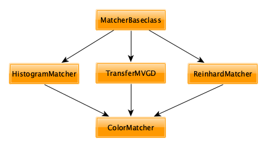

API documentation¶
Class hierarchy¶
A schematic overview of the class hierarchy is seen in the diagram below:
As the classes will be of primary interest for future extensions, all are documented hereafter.
API¶
-
class
color_matcher.ColorMatcher(*args, **kwargs)¶ -
__init__(*args, **kwargs)¶ Initialize self. See help(type(self)) for accurate signature.
-
main(method: str = None) → numpy.ndarray¶ The main function and high-level entry point performing the mapping. Valid methods are
- Parameters
method (
str) – (‘default’, ‘mvgd’, ‘hm’, ‘hm-mkl-hm’, ‘reinhard’) describing how to conduct color mapping- Returns
Resulting image after color mapping
- Return type
np.ndarray
-
-
class
color_matcher.HistogramMatcher(*args, **kwargs)¶ -
__init__(*args, **kwargs)¶ Initialize self. See help(type(self)) for accurate signature.
-
hist_match(src: numpy.ndarray = None, ref: numpy.ndarray = None) → numpy.ndarray¶ This function conducts channel-wise histogram matching which is invariant of image resolutions, but requires the same number of color channels in both images.
-
-
class
color_matcher.TransferMVGD(*args, **kwargs)¶ -
__init__(*args, **kwargs)¶ Initialize self. See help(type(self)) for accurate signature.
-
static
mkl_solver(cov_r: numpy.ndarray, cov_z: numpy.ndarray)¶ This function computes the transfer matrix based on the Monge-Kantorovich linearization.
-
transfer(src: numpy.ndarray = None, ref: numpy.ndarray = None, fun: function = None) → numpy.ndarray¶ Transfer function to map colors based on for Multi-Variate Gaussian Distributions (MVGDs).
-
-
class
color_matcher.MatcherBaseclass(*args, **kwargs)¶ -
__init__(*args, **kwargs)¶ Initialize self. See help(type(self)) for accurate signature.
-
validate_color_chs()¶ This function checks whether provided images consist of 3 color channels. An exception is thrown otherwise.
-
validate_img_dims()¶ This function validates the image dimensions. It throws an exception if the dimension are unequal to 2 or 3.
-